The film of the lab report Holding the Room: the room's probes, the law, the ladder and its three modes, the proof and the two screens as one block diagram, walked arrow by arrow, from the outside in. The controller has run on the live fleet in advise mode only and has never changed a machine; wake-on-LAN is untried; the house's loss per degree is unknown, so SeaTac's temperature is read and shown and not yet used in the law; the room's time constant is not measured; the 21.0 °C target was set to give the first pass something to say and Paul has not chosen it; and both room probes are inside two Geiger counters' cases on one machine. The film says what the report says and no more. The film is 14:10 long and has no sound. Its narration, 1,904 words, scrolls in the corner at 150 words a minute, the word to be spoken lit, for whoever reads it aloud; the same words are the film's captions. Under it, every one of its 15 arrows as a still, with what moves along it, why, the rule at the border, and what is said.
Each card is one step of the film. The picture is the whole diagram at that moment, with the arrow lit and the small map in its corner showing where the step sits. The button plays that step in the film above.
1. The room's thermometers
two counters→the mediana reading every 5 s
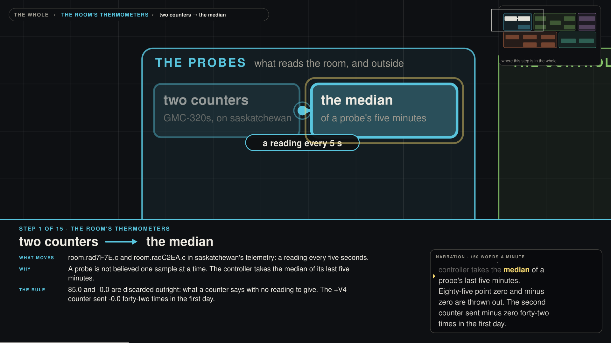
What moves
room.rad7F7E.c and room.radC2EA.c in saskatchewan's telemetry: a reading every five seconds.
Why
A probe is not believed one sample at a time. The controller takes the median of its last five minutes.
The rule
85.0 and -0.0 are discarded outright: what a counter says with no reading to give. The +V4 counter sent -0.0 forty-two times in the first day.
Narration
Each counter's reading arrives every five seconds, and it is not believed one sample at a time. The controller takes the median of a probe's last five minutes. Eighty-five point zero and minus zero are thrown out. The second counter sent minus zero forty-two times in the first day.
2. The room's thermometers
the median→the room26.8 and 26.0
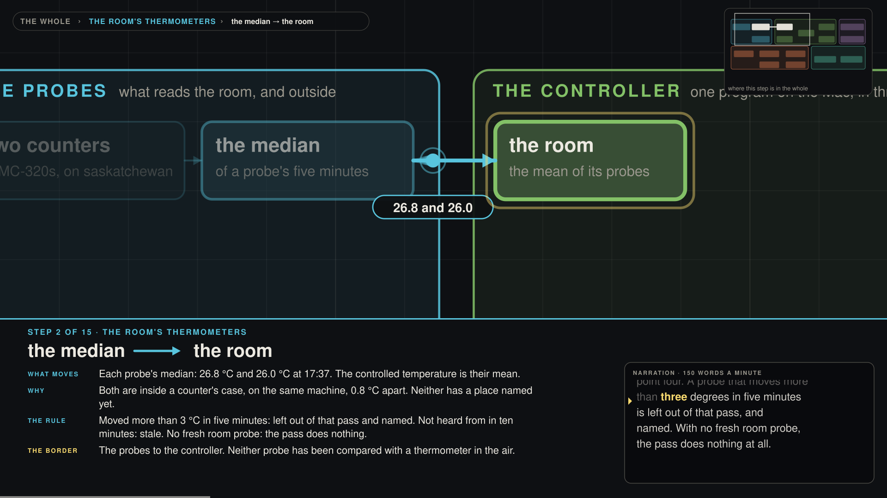
What moves
Each probe's median: 26.8 °C and 26.0 °C at 17:37. The controlled temperature is their mean.
Why
Both are inside a counter's case, on the same machine, 0.8 °C apart. Neither has a place named yet.
The rule
Moved more than 3 °C in five minutes: left out of that pass and named. Not heard from in ten minutes: stale. No fresh room probe: the pass does nothing.
The border
The probes to the controller. Neither probe has been compared with a thermometer in the air.
Narration
The temperature that is held is the mean of the room probes: twenty-six point four. A probe that moves more than three degrees in five minutes is left out of that pass, and named. With no fresh room probe, the pass does nothing at all.
3. The law
the target→the lawthe error
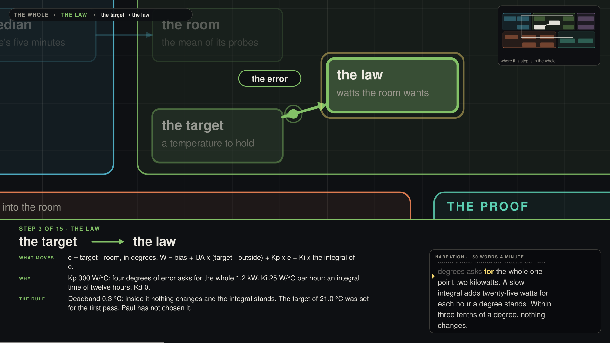
What moves
e = target - room, in degrees. W = bias + UA x (target - outside) + Kp x e + Ki x the integral of e.
Why
Kp 300 W/°C: four degrees of error asks for the whole 1.2 kW. Ki 25 W/°C per hour: an integral time of twelve hours. Kd 0.
The rule
Deadband 0.3 °C: inside it nothing changes and the integral stands. The target of 21.0 °C was set for the first pass. Paul has not chosen it.
Narration
The law starts from the error: the target less the room. Each degree asks three hundred watts, so four degrees asks for the whole one point two kilowatts. A slow integral adds twenty-five watts for each hour a degree stands. Within three tenths of a degree, nothing changes.
4. The law
SeaTac's air→the law9.0 °C
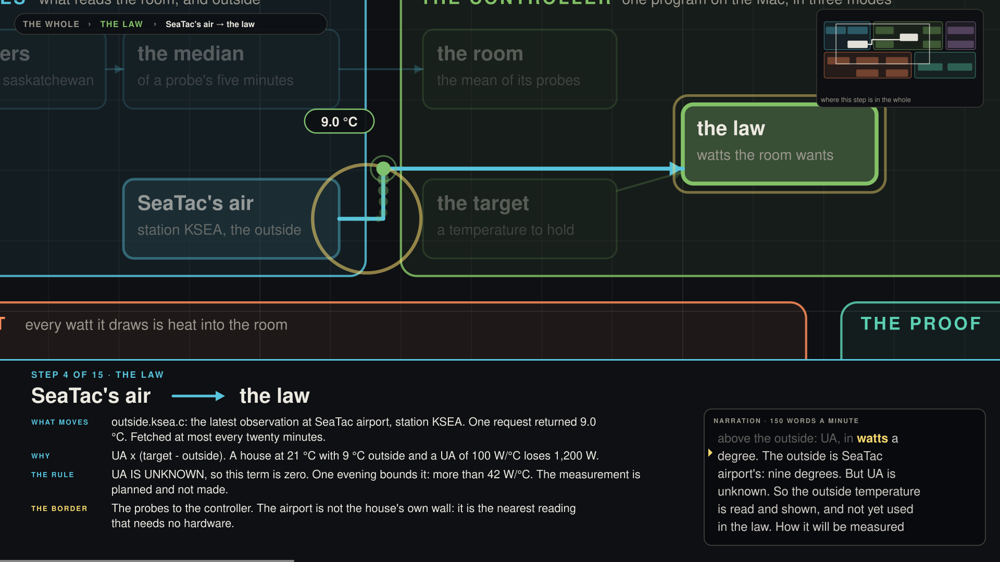
What moves
outside.ksea.c: the latest observation at SeaTac airport, station KSEA. One request returned 9.0 °C. Fetched at most every twenty minutes.
Why
UA x (target - outside). A house at 21 °C with 9 °C outside and a UA of 100 W/°C loses 1,200 W.
The rule
UA IS UNKNOWN, so this term is zero. One evening bounds it: more than 42 W/°C. The measurement is planned and not made.
The border
The probes to the controller. The airport is not the house's own wall: it is the nearest reading that needs no hardware.
Narration
The second term is for the outside. A house loses heat by how far it is above the outside: UA, in watts a degree. The outside is SeaTac airport's: nine degrees. But UA is unknown. So the outside temperature is read and shown, and not yet used in the law. How it will be measured comes at the end of this act.
5. The law
the law→the balancewatts wanted
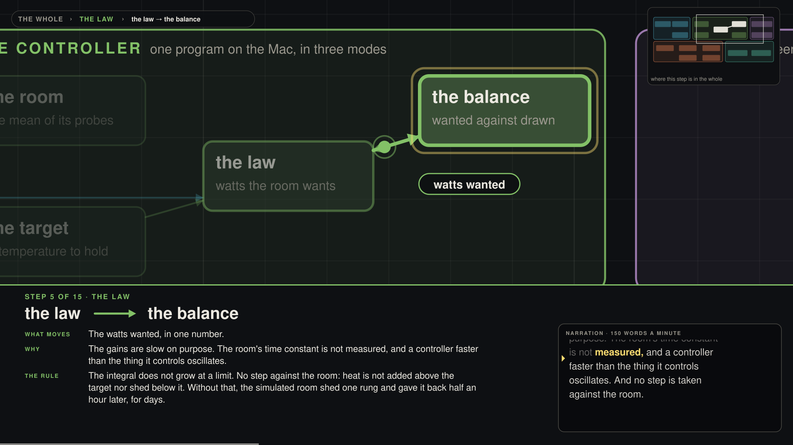
What moves
The watts wanted, in one number.
Why
The gains are slow on purpose. The room's time constant is not measured, and a controller faster than the thing it controls oscillates.
The rule
The integral does not grow at a limit. No step against the room: heat is not added above the target nor shed below it. Without that, the simulated room shed one rung and gave it back half an hour later, for days.
Narration
Out comes one number: the watts the room wants. The gains are slow on purpose. The room's time constant is not measured, and a controller faster than the thing it controls oscillates. And no step is taken against the room.
6. The law
the wall watts→the balance704 W
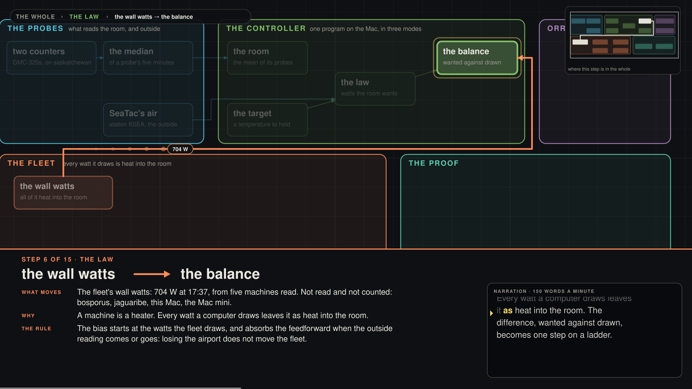
What moves
The fleet's wall watts: 704 W at 17:37, from five machines read. Not read and not counted: bosporus, jaguaribe, this Mac, the Mac mini.
Why
A machine is a heater. Every watt a computer draws leaves it as heat into the room.
The rule
The bias starts at the watts the fleet draws, and absorbs the feedforward when the outside reading comes or goes: losing the airport does not move the fleet.
Narration
The other side of the balance is what the fleet draws at the wall. Every watt a computer draws leaves it as heat into the room. The difference, wanted against drawn, becomes one step on a ladder.
7. The ladder
the balance→the modethe difference
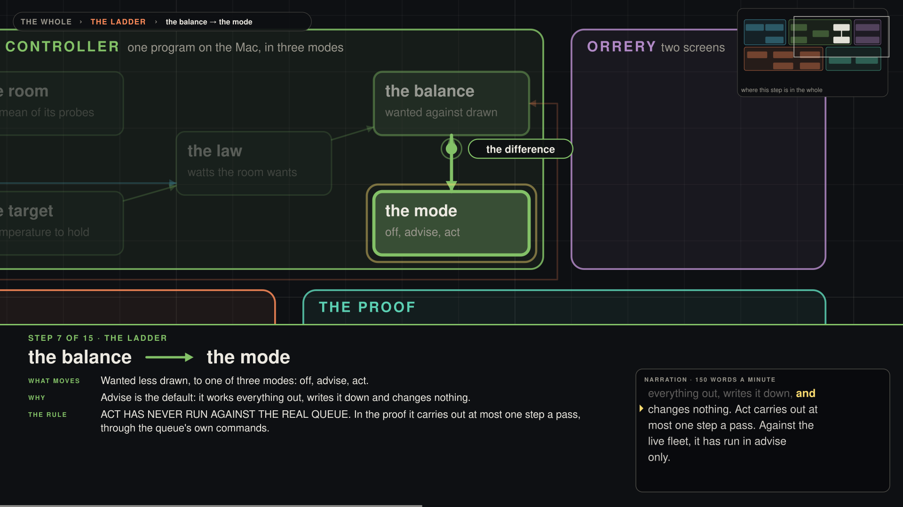
What moves
Wanted less drawn, to one of three modes: off, advise, act.
Why
Advise is the default: it works everything out, writes it down and changes nothing.
The rule
ACT HAS NEVER RUN AGAINST THE REAL QUEUE. In the proof it carries out at most one step a pass, through the queue's own commands.
Narration
What becomes of the difference depends on the mode. Off does nothing. Advise, the default, works everything out, writes it down, and changes nothing. Act carries out at most one step a pass. Against the live fleet, it has run in advise only.
8. The ladder
the mode→CPU lanestake nothing new
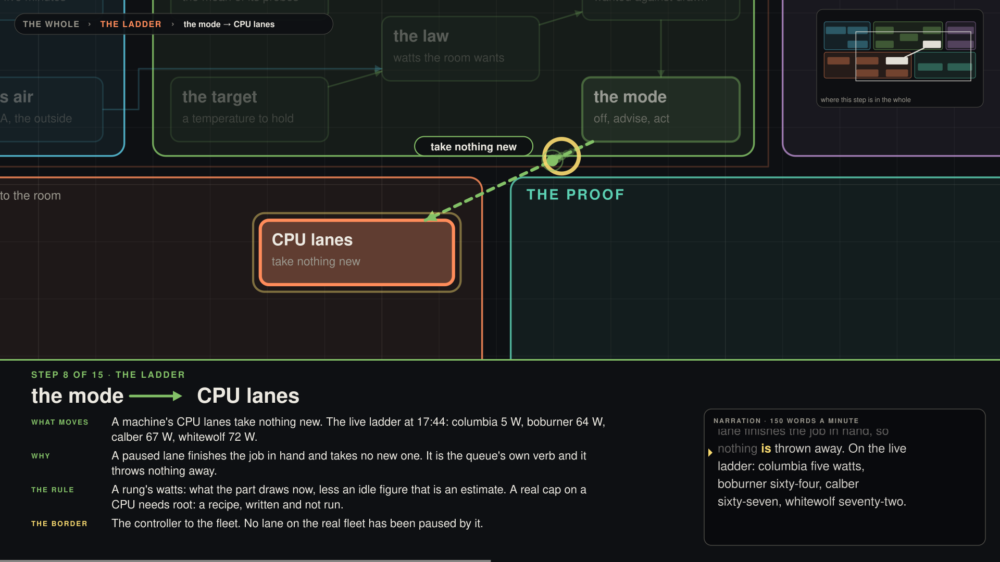
What moves
A machine's CPU lanes take nothing new. The live ladder at 17:44: columbia 5 W, boburner 64 W, calber 67 W, whitewolf 72 W.
Why
A paused lane finishes the job in hand and takes no new one. It is the queue's own verb and it throws nothing away.
The rule
A rung's watts: what the part draws now, less an idle figure that is an estimate. A real cap on a CPU needs root: a recipe, written and not run.
The border
The controller to the fleet. No lane on the real fleet has been paused by it.
Narration
The first rungs: a machine's CPU lanes take no new jobs. A paused lane finishes the job in hand, so nothing is thrown away. On the live ladder: columbia five watts, boburner sixty-four, calber sixty-seven, whitewolf seventy-two.
9. The ladder
CPU lanes→a card's lanethen the card
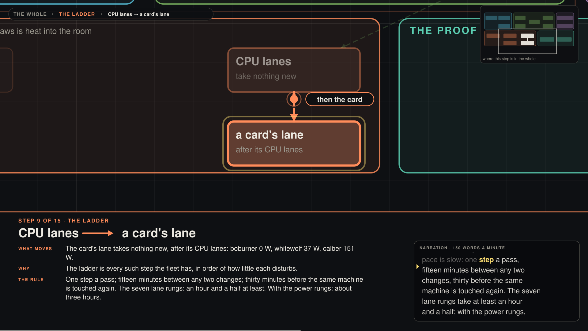
What moves
The card's lane takes nothing new, after its CPU lanes: boburner 0 W, whitewolf 37 W, calber 151 W.
Why
The ladder is every such step the fleet has, in order of how little each disturbs.
The rule
One step a pass; fifteen minutes between any two changes; thirty minutes before the same machine is touched again. The seven lane rungs: an hour and a half at least. With the power rungs: about three hours.
Narration
Then a machine's card lane, after its CPU lanes. Calber's is a hundred and fifty-one watts. The pace is slow: one step a pass, fifteen minutes between any two changes, thirty before the same machine is touched again. The seven lane rungs take at least an hour and a half; with the power rungs, about three hours.
10. The ladder
a card's lane→power offnot allowed
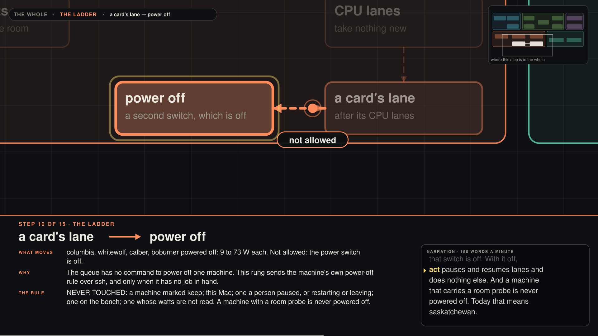
What moves
columbia, whitewolf, calber, boburner powered off: 9 to 73 W each. Not allowed: the power switch is off.
Why
The queue has no command to power off one machine. This rung sends the machine's own power-off rule over ssh, and only when it has no job in hand.
The rule
NEVER TOUCHED: a machine marked keep; this Mac; one a person paused, or restarting or leaving; one on the bench; one whose watts are not read. A machine with a room probe is never powered off.
Narration
The last rung powers a machine off. It sits behind a second switch, and that switch is off. With it off, act pauses and resumes lanes and does nothing else. And a machine that carries a room probe is never powered off. Today that means saskatchewan.
11. The ladder
power off→wake-on-LAN102 bytes
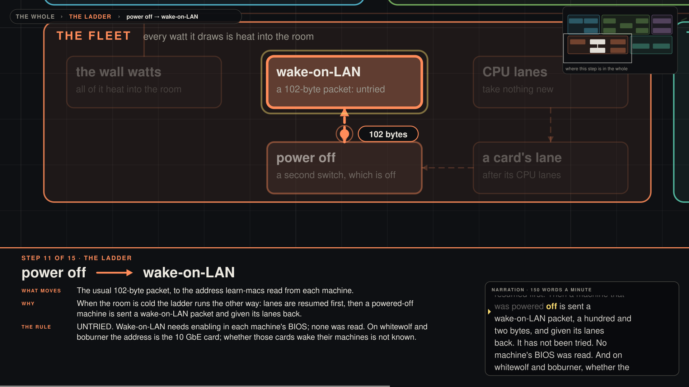
What moves
The usual 102-byte packet, to the address learn-macs read from each machine.
Why
When the room is cold the ladder runs the other way: lanes are resumed first, then a powered-off machine is sent a wake-on-LAN packet and given its lanes back.
The rule
UNTRIED. Wake-on-LAN needs enabling in each machine's BIOS; none was read. On whitewolf and boburner the address is the 10 GbE card; whether those cards wake their machines is not known.
Narration
When the room is cold the ladder runs the other way. Lanes are resumed first. Then a machine that was powered off is sent a wake-on-LAN packet, a hundred and two bytes, and given its lanes back. It has not been tried. No machine's BIOS was read. And on whitewolf and boburner, whether the ten gigabit cards wake their machines is not known.
12. The proof
the mode→a scratch queueact
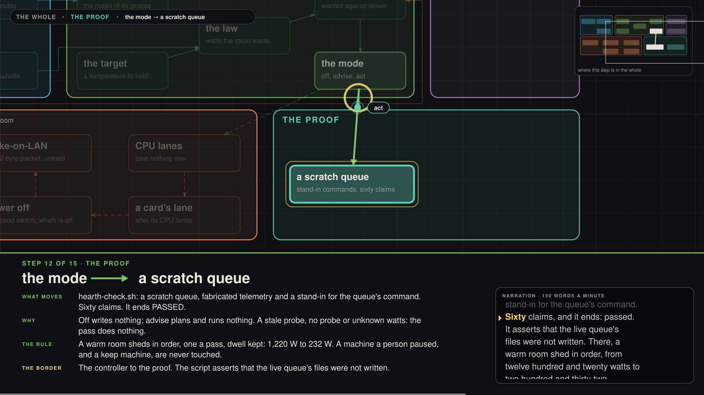
What moves
hearth-check.sh: a scratch queue, fabricated telemetry and a stand-in for the queue's command. Sixty claims. It ends PASSED.
Why
Off writes nothing; advise plans and runs nothing. A stale probe, no probe or unknown watts: the pass does nothing.
The rule
A warm room sheds in order, one a pass, dwell kept: 1,220 W to 232 W. A machine a person paused, and a keep machine, are never touched.
The border
The controller to the proof. The script asserts that the live queue's files were not written.
Narration
Everything that acts was proved somewhere else: on a scratch queue, with fabricated telemetry and a stand-in for the queue's command. Sixty claims, and it ends: passed. It asserts that the live queue's files were not written. There, a warm room shed in order, from twelve hundred and twenty watts to two hundred and thirty-two.
13. The proof
a scratch queue→a simulated roomwatts
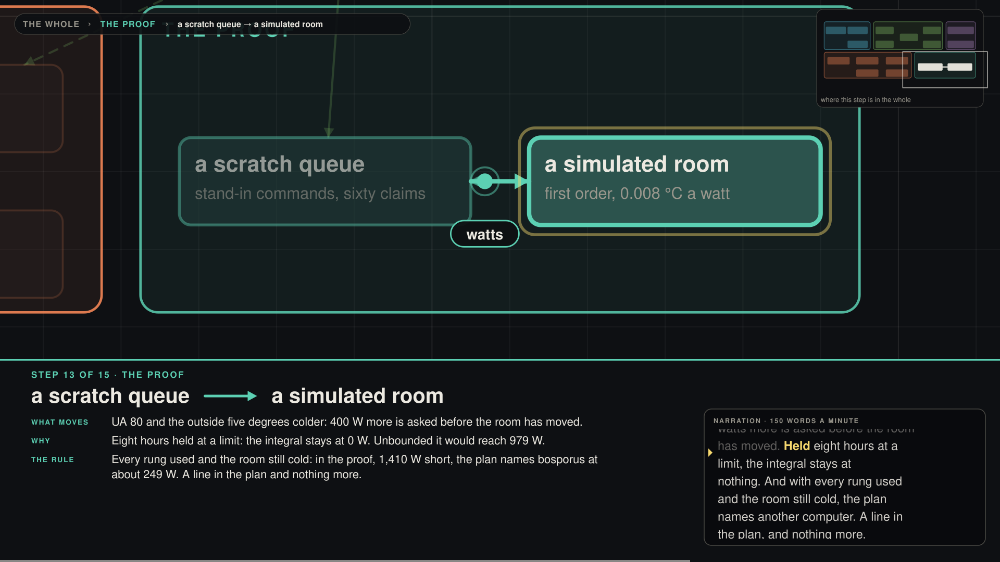
What moves
UA 80 and the outside five degrees colder: 400 W more is asked before the room has moved.
Why
Eight hours held at a limit: the integral stays at 0 W. Unbounded it would reach 979 W.
The rule
Every rung used and the room still cold: in the proof, 1,410 W short, the plan names bosporus at about 249 W. A line in the plan and nothing more.
Narration
With UA at eighty and the outside five degrees colder, four hundred watts more is asked before the room has moved. Held eight hours at a limit, the integral stays at nothing. And with every rung used and the room still cold, the plan names another computer. A line in the plan, and nothing more.
14. The two screens
Heat: the Hearth panel→the modetarget, mode
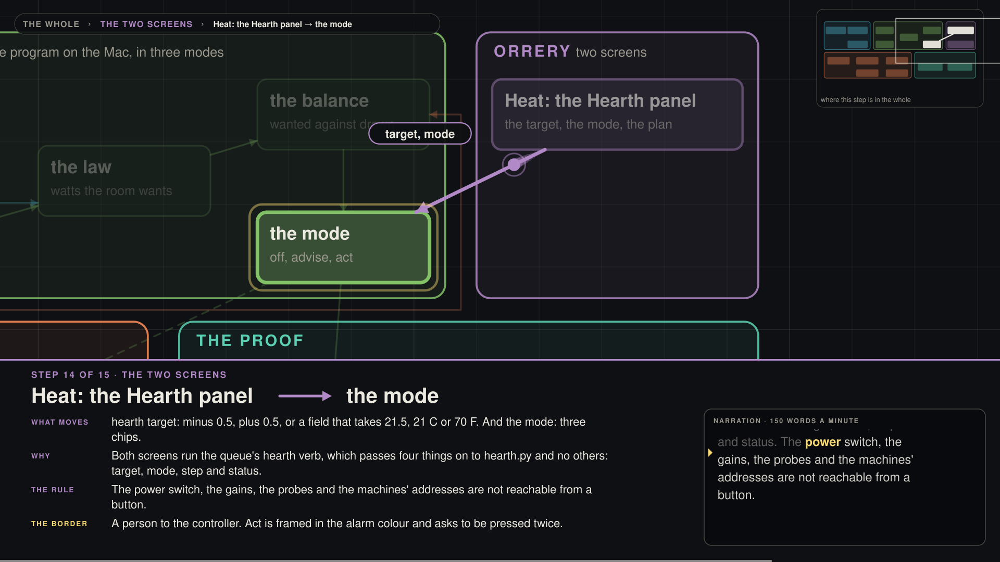
What moves
hearth target: minus 0.5, plus 0.5, or a field that takes 21.5, 21 C or 70 F. And the mode: three chips.
Why
Both screens run the queue's hearth verb, which passes four things on to hearth.py and no others: target, mode, step and status.
The rule
The power switch, the gains, the probes and the machines' addresses are not reachable from a button.
The border
A person to the controller. Act is framed in the alarm colour and asks to be pressed twice.
Narration
Both screens run the queue's hearth verb, which passes on four things and no others: target, mode, step and status. The power switch, the gains, the probes and the machines' addresses are not reachable from a button.
15. The two screens
Fleet: the switch→the modeoff, or advise
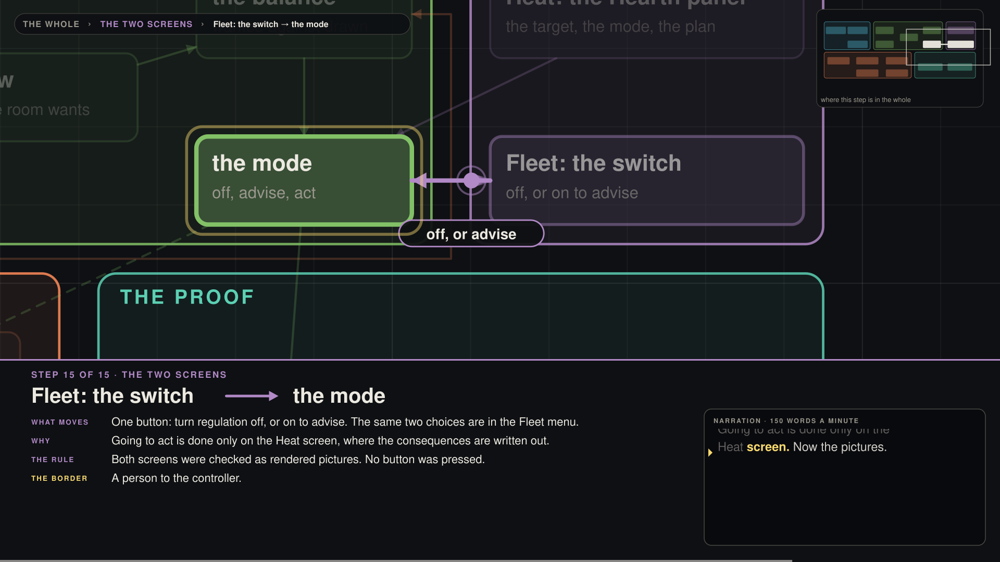
What moves
One button: turn regulation off, or on to advise. The same two choices are in the Fleet menu.
Why
Going to act is done only on the Heat screen, where the consequences are written out.
The rule
Both screens were checked as rendered pictures. No button was pressed.
The border
A person to the controller.
Narration
The Fleet screen's one button turns regulation off, or on to advise. Going to act is done only on the Heat screen. Now the pictures.
How the film is made
The film is one file of words and positions (storyboard.json) drawn by three scripts: tools/report/film.py, what any such film shares, and tools/report/process_film.py, how a block diagram is walked; and tools/report/hearth-auto_film.py, this report's own opening, the scenes that follow four of its acts (the house's heat balance with the bound one evening gives on its loss, the first live pass in the plan's own words, the simulated room, the report's three pictures of Orrery) and its two columns of what was done and what was not. Every number in it is the report's, its guide's, or is in the report's own pictures.
The words first
Each scene is exactly as long as its narration at 150 words a minute, with a breath before and after. A mark in the narration is a cue, and the picture's moves are written against cues, so the picture can never run ahead of what is said.
One stage
The diagram is drawn once, every block in its place for the whole film. Scenes move a camera over it and change what is lit. The viewer learns the map once and is never shown a second one.
A function of time
Every frame is computed from its time alone; nothing accumulates. A property is a tween between two times on an easing curve. So any frame renders by itself, a still for this page is the same call as a frame of the film, and the frames render in any order: here by a few processes, the Mac being the fleet's coordinator.
Gather, go, land
A move has three parts. The source dips as the token sets out, the token eases away and eases in with a trail behind it, the destination swells as it arrives. One thing moves at a time; a row of words rises into place only while nothing else is moving.
The border
Where an arrow leaves one territory a ring opens on the border, and the token takes the colour of the territory it enters: what crosses is no longer the first territory's.
The cold open
Before the title, the room's two thermometers, each inside a Geiger counter's case on one machine, and the two things a counter says that are not a temperature; then the first pass on the live fleet, which read 26.4 °C against 21.0 °C, said to shed 446 W of 704 W, and did nothing; then what the controller has not done, and the questions the film answers.
Outside in
After the title it opens far off on the whole, names five territories, then the four borders and what crosses each, then goes inside: the probes, the law, the ladder, the proof, the two screens. Each step carries the path down to it in the top left and a small map of the whole in the top right, so no step is seen out of its place.
The pictures
Three of the report's own pictures of Orrery are shown whole, with what the narration names ringed as it is named. The third is a made-up plan in a scratch queue, and its heading and its first words say so for as long as it is shown.
Done, and not done
Before the close, two columns: what was measured, built, proved and run, and what was not. Act on the real queue, wake-on-LAN, UA, the house's time constant and the schedule are in the second.
Pace
A step runs 12 to 29 seconds: the camera arrives in a second and a half, the arrow draws, the token travels for 3.4 seconds and sets out again every 5.6 while the step is told; what moves appears at 2.8 seconds, why at 5, the rule at 7, the border at 8.